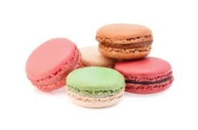
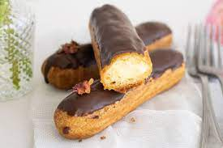

Estamos a tu servicio con postres endemicos de Francia.
Reposteria Dulce Vida contamos con postres variados para su consumo, hechos con ingredientes de primera calidad.
POSTRES
CANNOLO
Consiste en una masa enrollada en forma de tubo que dentro lleva ingredientes mezclados con queso ricota.
CREPA
Elavorado con harina, huevos, leche, mantequilla y se rellena con frutas y con crema pastelera.

MACARRON
Los macarons son deliciosos pastelitos elaborados a base de harina de almendras, azúcar glas y clara de huevo.
MUFFIN
Los muffins son preparados principalmente a base de harina de trigo, huevo, aceite vegetal, leche de vaca, polvos de hornear, esencia y azúcar.
PROFITEROL
Los profiteroles son unas Berlinesas elaboradas con una pasta especial llamada pasta choux y que se rellenan con distintos ingredientes al gusto que pueden ser helado, chocolate, crema
PASTIERA
La pastiera es un bizcocho de masa quebrada relleno de una mezcla de ricotta, azúcar, huevos y trigo hervido en leche, cubierto con tiras de la misma masa quebrada entrelazadas en una cruz
SFOGLIATELLA
sfogliatella riccia es elaborada sobre muchas capas enrolladas para formar el hojaldre. Rellenos de pasta de ricotta.

ECLAIR
es un bollo fino o dona hecho con pasta choux, a la que se da forma alargada y se hornea hasta que queda crujiente y hueco, y que habitualmente se rellena.